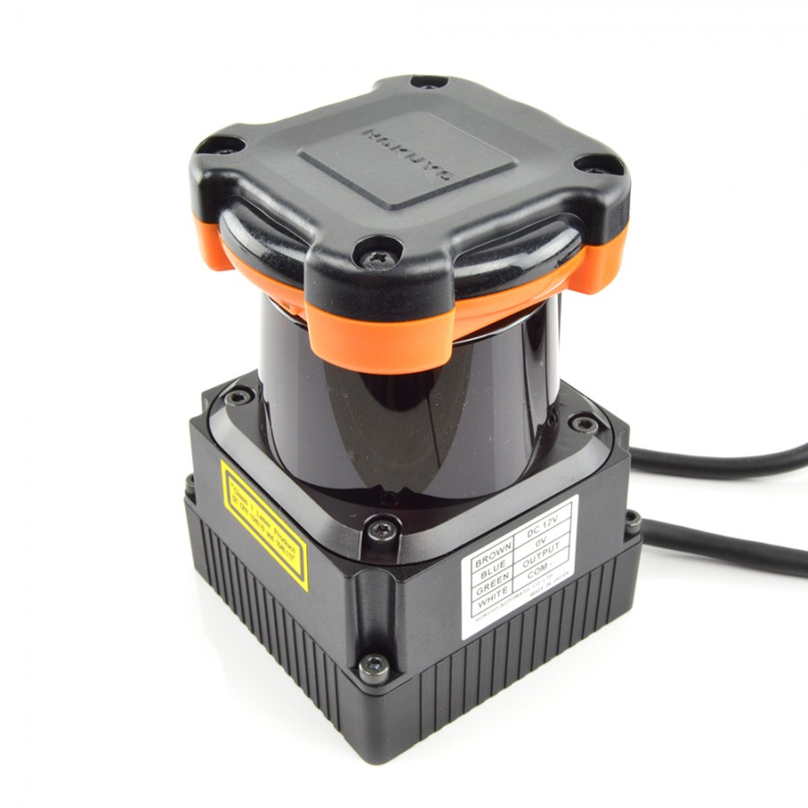

Laser¶
Cacic has Scanning Laser Range Finder, Hokuyo UTM-30LX
Image credit: RobotShop
Laser Especs¶
- Supply Voltage: 12VDC +- 10%
- Supply Current: 1.0 MAX, 0.7 NORMAL
- Detection Range: 0.1 ~ 30m
- Measurement Resolution: 0.1~10m: σ < 10mm, 10~30: σ < 30mm
- Scan Angle: 270°
- Angular resolution: 0.25° (360°/1440)
- Scan Speed: 25ms
- Interface: USB 2.0
Driver¶
The comunication with the device is provided by a ROS node, go to How to use the laser for more details.